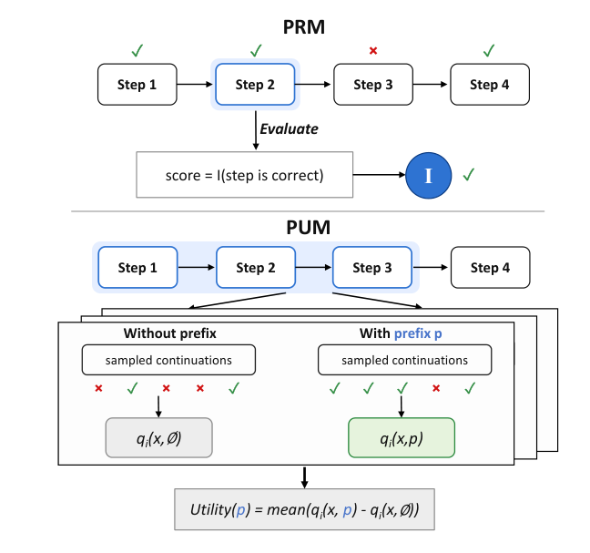
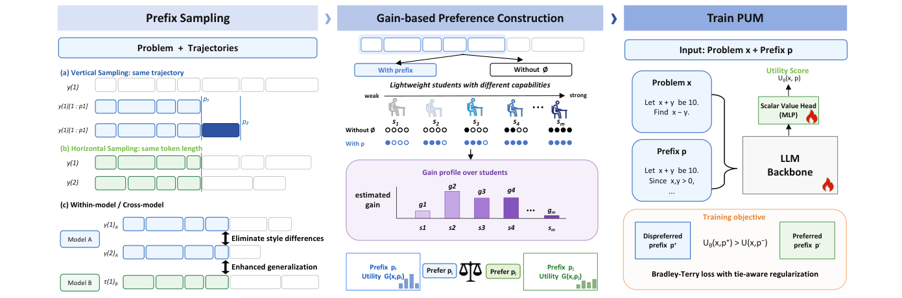
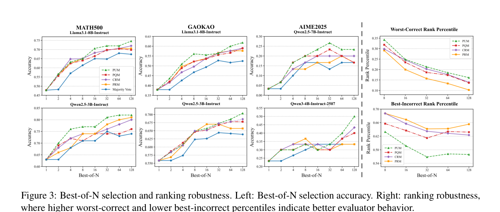
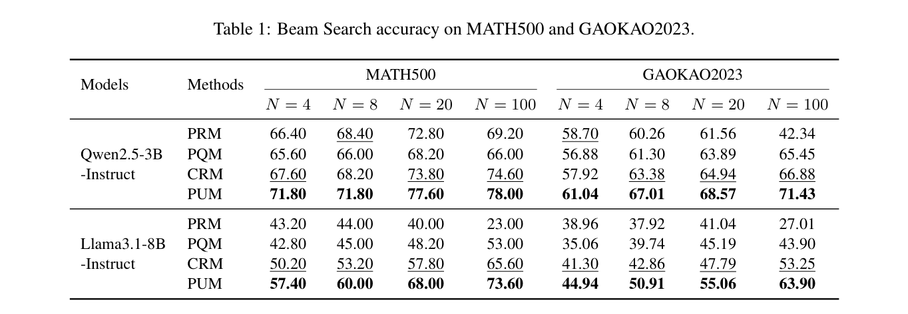
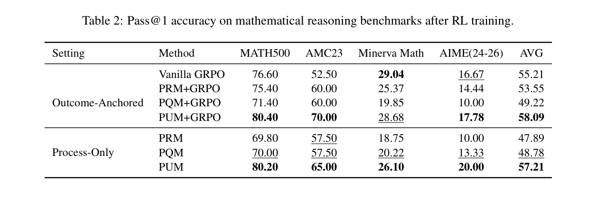
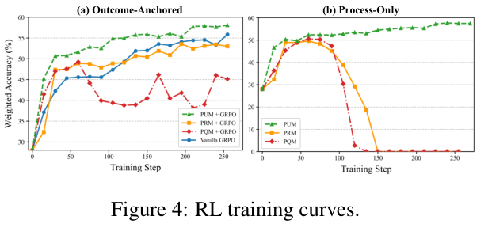
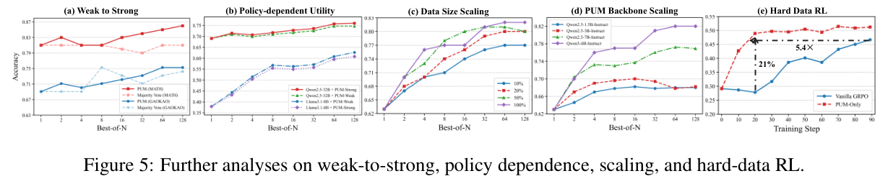
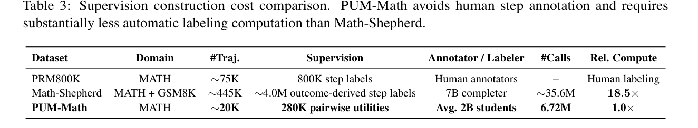

Prefix sampling
Construct vertical and horizontal comparisons from diverse reasoning trajectories.
Gain-based prefix evaluation for LLM reasoning
PUM evaluates a reasoning prefix by asking a future-facing question: does this prefix make the problem easier to solve?

Core idea
A locally correct step can still leave the remaining reasoning brittle. A non-final prefix can be useful if it exposes a productive decomposition that increases downstream solve probability.
Compare success after conditioning on prefix p against solving the same problem from scratch.
Method
PUM converts outcome-grounded solve-rate gains into pairwise prefix preferences, then trains a scalar utility model to score partial and complete reasoning trajectories.

Construct vertical and horizontal comparisons from diverse reasoning trajectories.
Lightweight students solve with and without a prefix; their solve-rate differences form a gain profile.
Gain differences become preference labels for training an LLM backbone with a scalar value head.
Results
The webpage below uses the original figures and tables from the PDF so visitors can inspect the evidence directly.
Consistent gains across policy models and datasets, especially when candidate pools grow.
MATH500 with Qwen2.5-3B at N=100; GAOKAO2023 reaches 71.43% in the same setting.
PUM+GRPO improves average accuracy over vanilla GRPO in the outcome-anchored setup.
PUM-Math uses lightweight students and avoids human step-level annotations.






Interactive example
This example illustrates why evaluating the future effect of a prefix can be different from simply checking surface plausibility.
Let x and y be real numbers such that x + y = 10 and xy = 21. Find x² + y².
Prefix A reduces the remaining task to a direct calculation: x² + y² = (x + y)² - 2xy = 100 - 42 = 58. Prefix B looks simple but violates xy = 21 because 6 × 4 = 24, so it pushes the continuation toward a wrong answer.
Resources
Replace the placeholder links below when the public release is ready.
@article{zhou2026from,
title = {From Correctness to Utility: Gain-Based Prefix Evaluation for LLM Reasoning},
author = {Yuhang Zhou and Yixin Cao and Guangnan Ye},
journal={arXiv preprint arXiv:2606.07190},
year = {2026},
}